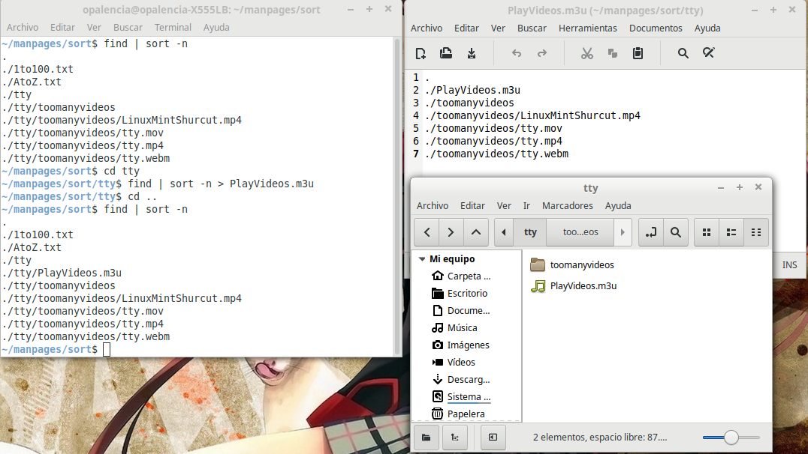

Ordenar el contenido de archivos de texto y crear lista de reproducción de videos > sort¶
Nombre del comando: sort
Man page online: https://linux.die.net/man/1/sort
Descripción: Ordena el contenido de los achivos de texto, ya sea ascendente o descendente, tanto números como texto. Únicamente funciona con caracteres alfanuméricos y contenidos en archivos de texto. No sirve para archivos pdf, html, xml, u otros que no sean simples archivos de texto.
Man page local: $ man sort o $ man sort > sort.txt
Instalado por defecto: Sí, al menos en Linux Mint.
Algunas Opciones:
-r, --reverse Ordenar de forma descendente el contenido del archivo de texto. El comando “sort” ordena de forma ascendente cuando se usa sin ningún parámetro.
-R, --random-sort Ordenar de forma aleatoria.
-n, --numeric-sort Ordenar según valores numéricos.
Ejemplo 1: $ find | sort -n > PlayVideos.m3u, en este ejemplo creo un achivo llamado “PlayVideos.m3u” con el contenido de los videos de la carpeta “toomanyvideos”. Piensa en el siguiente caso, tienes una serie con varias temporadas en tu disco duro y quieres reproducir su contenido con un solo archivo en vez de andar buscando capítulo por capítulo, al crear un achivo “m3u” se resuelve esto, solo faltará abrir el achivo con un editor de texto y hacerle unas pequeñas modificaciones para que sea perfecto, lo importante de hacerlo de esta manera es que la ruta dónde están los videos quedará de forma relativa y no absoluta como lo hacen la mayoria de reproductudores de video al crear listas de reproducción, con esto podría mover dicha serie a cualquier disco duro interno o externo y el archivo de reproducción siempre funcionaría porque lleva la dirección relativa de los videos. La mayoría de reproductores reconocen estos achivos. Las modificaciones que son necesarias realizar en el archivo serían eliminar las líneas que hacen referencia a carpetas, en mi ejemplo serían:
.
./PlayVideos.m3u
./toomanyvideos
Ejemplo 2: $ find | sort -r, mostrar el listado de las carpetas y archivos de la carpeta actual de forma descendente.
Ejemplo 3: $ sort -nr 1to100.txt, imprima en pantalla de forma descendente los números contenidos en el achivo “1to100.txt”, es decir, imprima los números de mayor a menor.
Ejemplo 4: $ sort -R AtoZ.txt, imprima en pantalla de forma aleatoria el abecedario contenido en el archivo “AtoZ.txt”.